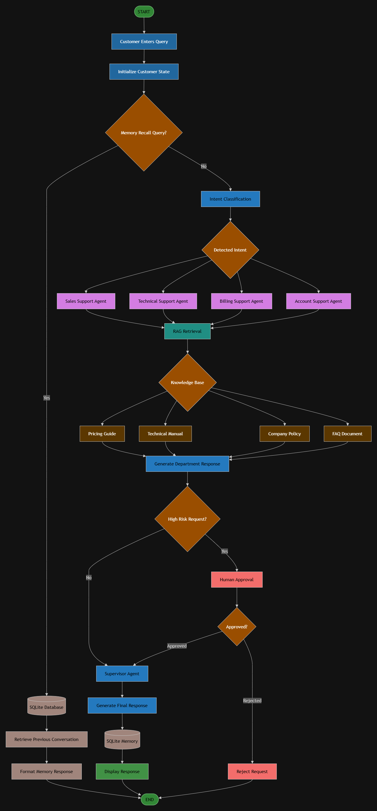
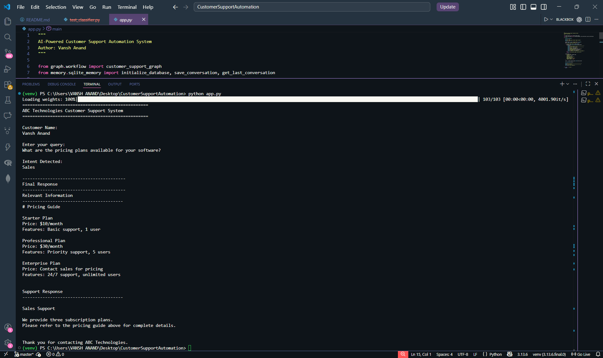
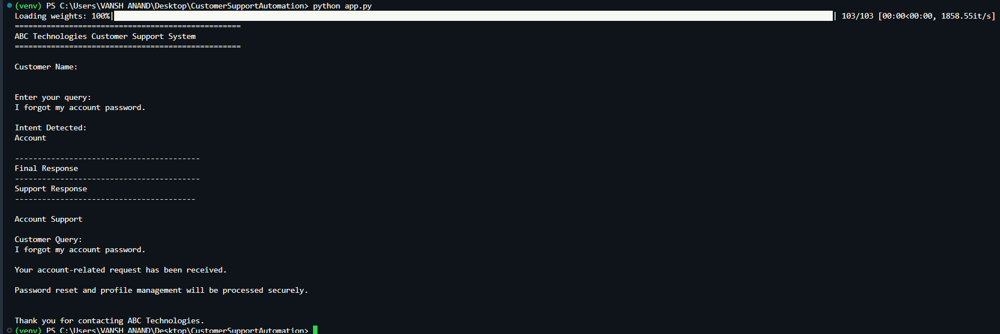
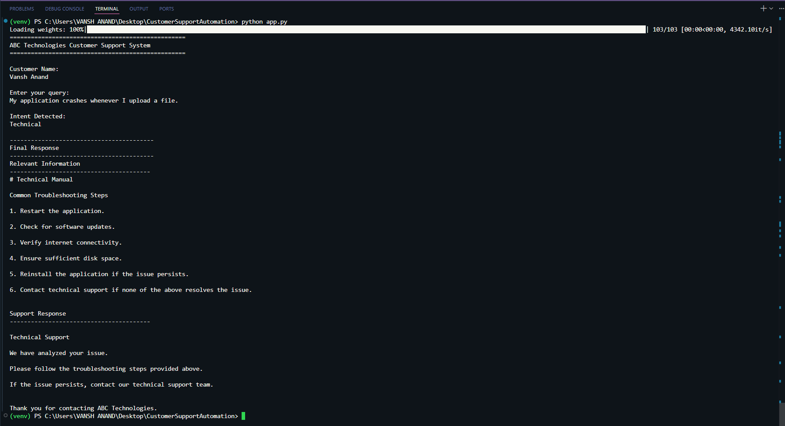
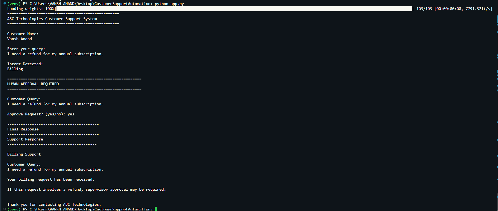
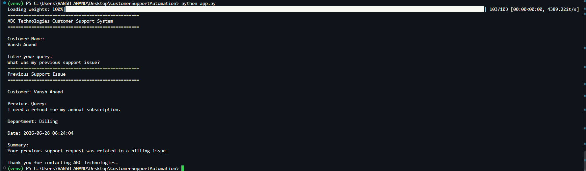

Course: Agentic AI
Assignment 2
Submitted By
Vansh Anand
Registration Number
23MID0105
VIT Vellore
This project presents an AI-Powered Customer Support Automation System developed using LangGraph, LangChain, Ollama (Llama 3.1), SQLite, and Retrieval-Augmented Generation (RAG). The system automates customer query handling through multiple specialized agents. It classifies customer intent, routes queries to the appropriate department, retrieves relevant information from company documents, stores conversation history using SQLite, supports memory recall, incorporates Human-in-the-Loop approval for high-risk requests, and validates responses through a Supervisor Agent before presenting the final response.
| Capability | Description |
|---|---|
| Intent Classification | Classifies customer queries into Sales, Technical, Billing, or Account using Llama 3.1 |
| Conditional Routing | Routes queries to specialized support agents based on detected intent |
| RAG Retrieval | Retrieves relevant information from the knowledge base using ChromaDB |
| Specialized Agents | Dedicated Sales, Technical, Billing, and Account support agents |
| SQLite Memory | Stores and recalls previous customer conversations |
| Human Approval | Requests supervisor approval for high-risk operations (refunds, cancellations) |
| Supervisor Agent | Reviews, validates, and improves generated responses before delivery |
| Final Response | Produces the validated, professional response for the customer |
The system follows a directed graph architecture implemented using LangGraph's StateGraph. Each node in the graph represents a processing stage, and edges define the flow of execution. The shared state (CustomerState) is passed through every node, accumulating information as the query progresses through the pipeline.

Figure 1: Overall LangGraph Workflow Architecture
CustomerState dictionary containing customer name, query, and empty fields for intent, context, responses, and approval flags.add_conditional_edges.| Component | Technology |
|---|---|
| Programming Language | Python 3.13 |
| Framework | LangGraph |
| AI Framework | LangChain |
| LLM | Ollama (Llama 3.1) |
| Embeddings | HuggingFace (all-MiniLM-L6-v2) |
| Vector Store | ChromaDB |
| Database | SQLite |
| IDE | Visual Studio Code |
The LangGraph workflow is defined in graph/workflow.py. It connects all nodes into a single executable directed graph.
| Node | Function | Description |
|---|---|---|
| classifier | classify_intent() | Uses Llama 3.1 to classify queries into Sales, Technical, Billing, or Account |
| sales | sales_agent() | Handles sales queries and retrieves pricing information via RAG |
| technical | technical_agent() | Handles technical issues and retrieves troubleshooting steps via RAG |
| billing | billing_agent() | Handles billing, invoice, and refund-related queries |
| account | account_agent() | Handles password resets and account management |
| approval | approval_agent() | Checks for high-risk keywords and flags requests requiring human approval |
| human | human_approval() | Prompts for manual approval/rejection of flagged requests |
| supervisor | supervisor_agent() | Validates response, combines RAG context, and generates final output |
| File | Description |
|---|---|
classifier.py | Uses Ollama's Llama 3.1 model with zero temperature to classify the customer query into one of four intents: Sales, Technical, Billing, or Account. |
sales_agent.py | Handles sales-related queries. Retrieves pricing information from the knowledge base using the RAG pipeline and generates a sales-focused response. |
technical_agent.py | Handles technical issues. Retrieves troubleshooting steps from the technical manual via RAG and provides step-by-step guidance. |
billing_agent.py | Handles invoices, payments, and refund-related queries. Flags refund requests for human approval. |
account_agent.py | Handles password resets, profile management, and account-related operations securely. |
approval_agent.py | Scans queries for high-risk keywords (refund, cancel, compensation, etc.) and flags them. Contains the human_approval() function for interactive approval. |
supervisor.py | Final validation layer. Combines RAG context and department response into a professional final response. Handles approval rejection scenarios. |
| File | Description |
|---|---|
state.py | Defines CustomerState as a TypedDict with fields: customer_name, user_query, intent, retrieved_context, department_response, final_response, approval_required, and approval_status. |
router.py | Contains the route_query() function that reads the classified intent and returns the corresponding agent node name for conditional routing. |
workflow.py | Builds the complete StateGraph, registers all nodes, defines edges (including conditional edges for routing and approval), and compiles the executable graph. |
| File | Description |
|---|---|
loader.py | Loads all .txt files from the knowledge_base/ directory using LangChain's TextLoader. |
rag_pipeline.py | Creates a ChromaDB vector store from document chunks, uses HuggingFace embeddings (all-MiniLM-L6-v2), and provides the retrieve_context() function for similarity search. |
| File | Description |
|---|---|
sqlite_memory.py | Manages SQLite database operations: initialize_database() creates the table, save_conversation() stores interactions, and get_last_conversation() retrieves the most recent conversation for a customer. |
The unified entry point that initializes the database, accepts customer input, checks for memory recall queries, executes the LangGraph workflow, saves the conversation to SQLite, and displays the final response.
The Retrieval-Augmented Generation (RAG) pipeline ensures that the system provides accurate, fact-based responses by retrieving relevant information from company documents before generating answers.
| Component | Implementation |
|---|---|
| Document Loader | TextLoader from LangChain Community |
| Text Splitter | RecursiveCharacterTextSplitter (chunk_size=500, overlap=50) |
| Embedding Model | HuggingFace all-MiniLM-L6-v2 |
| Vector Store | ChromaDB (persisted to ./database/chroma_db) |
| Retrieval Method | Similarity Search (k=1) |
.txt files from the knowledge_base/ folder are loaded using TextLoader.RecursiveCharacterTextSplitter.all-MiniLM-L6-v2 model.| Document | Content |
|---|---|
pricing_guide.txt | Subscription plans (Starter $10/month, Professional $30/month, Enterprise custom pricing) with features |
technical_manual.txt | Common troubleshooting steps: restart, update, verify connectivity, check disk space, reinstall, contact support |
company_policy.txt | Company policies and guidelines |
faq_document.txt | Frequently asked questions and answers |
The system uses SQLite to persist every customer interaction, enabling conversation recall across sessions.
database/customer_support.db and persists across application restarts.| Function | Description |
|---|---|
initialize_database() | Creates the conversation_history table if it does not exist |
save_conversation(state) | Inserts a new conversation record from the current state |
get_last_conversation(name) | Retrieves the most recent conversation for a given customer name |
High-risk customer requests are not processed automatically. They require explicit human approval before the system proceeds.
| Keyword | Scenario |
|---|---|
refund | Refund requests |
cancel / cancellation | Subscription cancellation |
account closure / close account | Account closure requests |
compensation | Compensation requests |
management | Escalation to management |
If the request is approved, the Supervisor Agent generates the final response normally. If the request is rejected, the Supervisor Agent returns a rejection message: "Your request cannot be processed because it was not approved by the supervisor."
The Supervisor Agent is the final validation layer before any response reaches the customer.
Relevant Information ---------------------------------------- [Retrieved RAG Context] Support Response ---------------------------------------- [Department Agent Response] Thank you for contacting ABC Technologies.
| Task | Description | Status |
|---|---|---|
| Task 1 | Project Setup and Initial Configuration | ✅ Completed |
| Task 2 | State Structure (CustomerState TypedDict) | ✅ Completed |
| Task 3 | Intent Classification using Llama 3.1 | ✅ Completed |
| Task 4 | Conditional Routing with LangGraph | ✅ Completed |
| Task 5 | Specialized Support Agents | ✅ Completed |
| Task 6 | RAG Pipeline (ChromaDB + HuggingFace) | ✅ Completed |
| Task 7 | SQLite Conversation Memory | ✅ Completed |
| Task 8 | Human-in-the-Loop Approval | ✅ Completed |
| Task 9 | Supervisor Agent | ✅ Completed |
| Task 10 | Complete System Integration and Demonstration | ✅ Completed |
Step 1: Clone the repository
git clone https://github.com/Vansh-Anand/AI-Powered-Customer-Support-Automation-System.git cd CustomerSupportAutomation
Step 2: Create a virtual environment
python -m venv venv venv\Scripts\activate
Step 3: Install dependencies
pip install -r requirements.txt
Step 4: Ensure Ollama is running
ollama pull llama3.1
Step 5: Run the application
python app.py
Input: "What are the pricing plans available for your software?"
The system classifies the intent as Sales, retrieves pricing information from the knowledge base via RAG, and presents the Starter, Professional, and Enterprise plans to the customer.

Input: "I forgot my account password."
The system classifies the intent as Account and routes the query to the Account Agent, which provides guidance on password reset and profile management.

Input: "My application crashes whenever I upload a file."
The system classifies the intent as Technical, retrieves troubleshooting steps from the technical manual via RAG, and provides step-by-step resolution guidance.

Input: "I need a refund for my annual subscription."
The system classifies the intent as Billing, detects the high-risk keyword "refund", and triggers the Human-in-the-Loop approval workflow. The supervisor processes the approved request.

Input: "What was my previous support issue?"
The system queries the SQLite database for the customer's most recent interaction and displays the previous query, department, date, and a summary.

The knowledge base consists of four text documents stored in the knowledge_base/ directory. These documents are loaded, chunked, embedded, and stored in the ChromaDB vector store for retrieval.
| File | Description |
|---|---|
company_policy.txt | Contains company policies, guidelines, and operational procedures for ABC Technologies. |
pricing_guide.txt | Lists subscription plans with pricing and features: Starter ($10/month, 1 user), Professional ($30/month, 5 users), and Enterprise (custom pricing, unlimited users). |
technical_manual.txt | Provides common troubleshooting steps: restart, update, connectivity check, disk space verification, reinstallation, and escalation to technical support. |
faq_document.txt | Contains frequently asked questions and their answers for quick customer reference. |
The project uses a single SQLite database file: database/customer_support.db
| Column | Type | Description |
|---|---|---|
id | INTEGER PRIMARY KEY AUTOINCREMENT | Unique identifier for each conversation |
customer_name | TEXT | Name of the customer |
user_query | TEXT | The original customer query |
intent | TEXT | Classified intent (Sales, Technical, Billing, Account) |
department_response | TEXT | Response generated by the department agent |
final_response | TEXT | Validated final response from the Supervisor Agent |
timestamp | DATETIME | Auto-generated timestamp (DEFAULT CURRENT_TIMESTAMP) |
CREATE TABLE IF NOT EXISTS conversation_history(
id INTEGER PRIMARY KEY AUTOINCREMENT,
customer_name TEXT,
user_query TEXT,
intent TEXT,
department_response TEXT,
final_response TEXT,
timestamp DATETIME DEFAULT CURRENT_TIMESTAMP
);
This project demonstrates a complete, end-to-end AI-Powered Customer Support Automation System that integrates multiple modern AI and software engineering concepts:
app.py entry point that seamlessly executes the complete workflow from customer input to final response, demonstrating production-ready system integration.The system successfully handles all five demonstration queries, covering sales inquiries, account management, technical support, billing with human approval, and memory recall — showcasing the full capabilities of the platform.
AI-Powered Customer Support Automation System — Vansh Anand (23MID0105) — VIT Vellore